ラスタデータの分析
本教材は、「ラスタデータの分析」の実習用教材です。各セルに標高値を保持しているラスタデータを用いて、地形解析の手法について解説しています。本教材では、数値標高モデル(DEM)として整備されたデータを用います。DEMは、Digital Elevation Modelの略であり、地形解析等に用いられるデータです。本教材の内容と対応する講義用教材の地理情報科学教育用スライド（GIScスライド）の4章を一読すると理解が深まります。
課題形式で使用する場合は、本教材を一読した後、課題ページへお進みください。GIS初学者は、本教材を進める前にGISの基本概念の教材を確認しておいてください。本教材を使用する際は、利用規約をご確認いただき、これらの条件に同意された場合にのみご利用下さい。
Menu
実習用データ
実習をはじめる前に、asoをダウンロードしてください。
スライド教材
本教材は、スライド_ラスタデータの分析としても、ご利用いただけます。
数値標高モデルの視覚的分析
各セルごとに標高値を保持しているラスタデータを用いることで、傾斜区分図、斜面方位図、陰影図、3D地図、断面図を作成することができます。以下では、その手法について解説しています。QGISを起動し、データソースマネージャ>ラスタからラスタデータを表示してください。

標高段彩図の作成
プロパティ＞シンボル体系を選択し、レンダリングタイプを単バンド疑似カラーを選択しOKをクリック押すとラスターの配色が変更できる。
 下の図のように、ラスターの配色が変更された。
下の図のように、ラスターの配色が変更された。

シンボル体系では、最小、最大値、分類モード、分類数等を指定できる。各項目を設定後、分類をクリックすると反映される。また、各値、ラベルの上で、ダブルクリックすると値、ラベルの指定ができる。 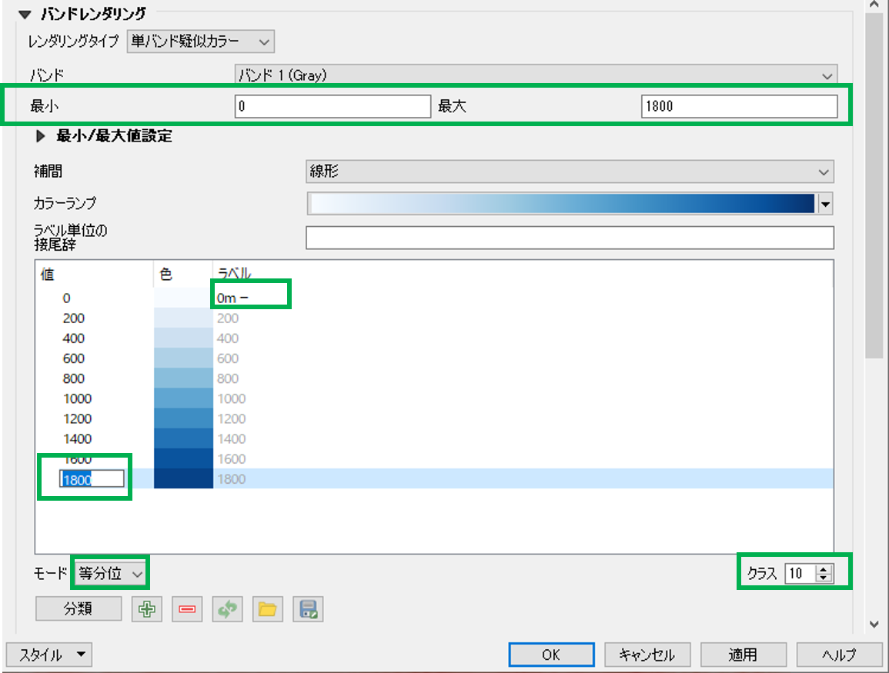
以下では、200ｍ間隔で標高値を色分けした。

傾斜区分図の作成
ラスタ＞解析＞傾斜を選択し、実行をクリックすると傾斜区分が計算できる。複数QGISを起動していると、解析機能が表示されない場合があるため注意する。

下の左のように傾斜が計算されるため、図の配色を整え、傾斜区分図を作成する。

斜面方位図の作成
ラスタ＞地形解析＞傾斜方位を実行すると傾斜方位が計算できる。

下の図のように、斜面方位が出力される。傾斜方位は、360°(0°-359.999°)で計算されるため角度に応じて値を分類する。

陰影図の作成
ラスタ＞地形解析＞陰影図を実行すると陰影図が計算できる。

下の図のように、陰影図が出力される。右下の図のように陰影図に標高値のラスタを重ね、プロパティ＞透過性から透過度を設定すると、立体的な地形表現となり、起伏が読み取りやすくなる。ここでは、陰影図の透過度や色合いを変更しないように注意する。

鳥瞰図の作成
ビュー＞新しい3Dマップビューを選択し、3Dビューの設定アイコンをクリックする。

高さに標高値のラスタデータを指定し、ＯＫをクリックする。ウィンドウ内で地図を動かすと3次元表示されていることが確認できる。鉛直スケールを1以上とすると、下の図のように地形を誇張して表現できる。 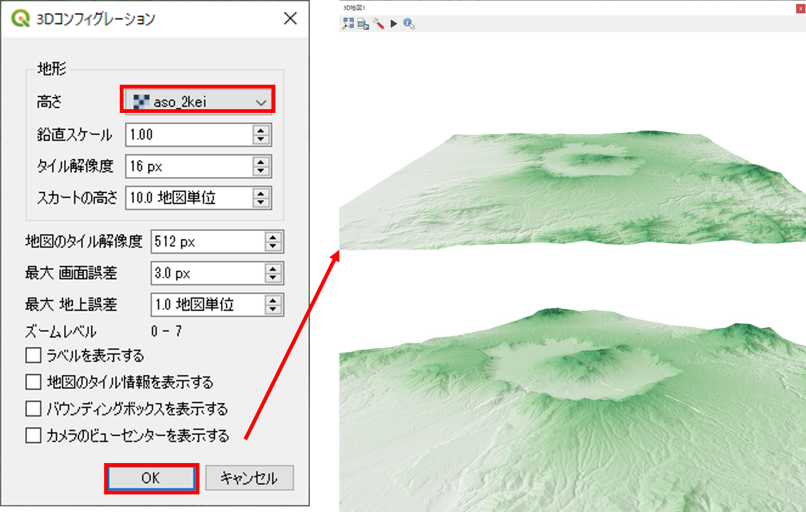
地形断面図の作成
プラグイン＞プラグインの管理とインストールからVoGIS Profile tool をインストールする。
ラスタ>VoGIS ProfileTool > VoGIS Profile Toolから起動する。

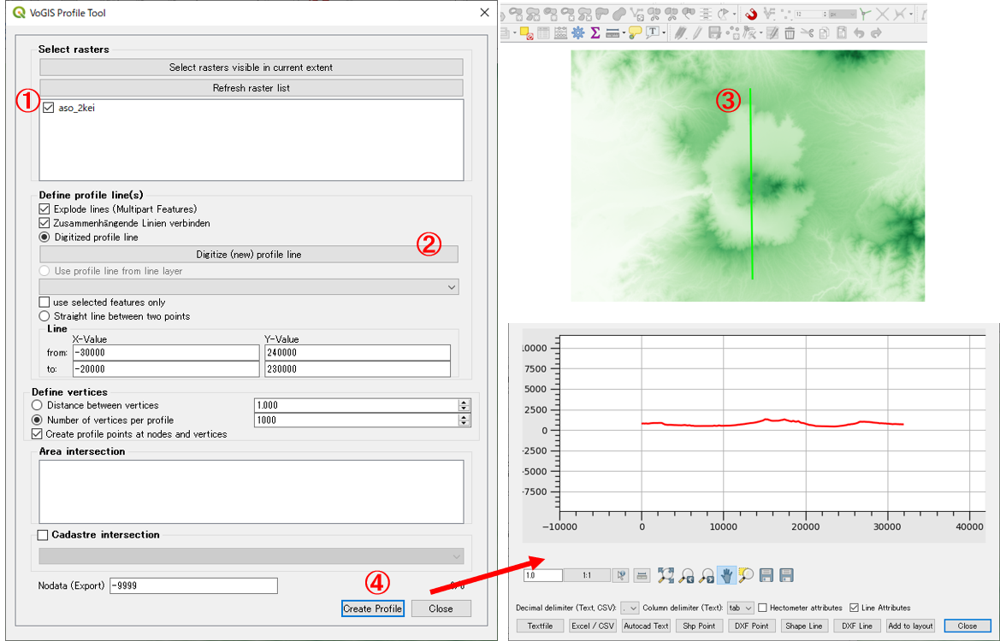
- 断面図を作成するラスタにチェックを入れる。
Digitize (new) profile lineをクリックする。- QGISの地図上でクリックしながらラインを作成する。（右クリックで終了）
Create Profileをクリックすると別ウィンドウに断面形状が表示される。
基本的な統計量の確認
以下では、QGISでラスタデータが保持する情報を確認する手法を解説しています。
ラスタ＞その他＞ラスター情報を開き、統計情報を表示するラスタを選択し、画像統計量を読み込んで表示するにチェックをつけ、実行をクリックする。

実行結果は、結果ビューアのFile pathをクリックし、html形式で確認する（座標系、セルサイズ、最低標高、最高標高、平均標高、標高の標準偏差等）。
ヒストグラムの表示は、プロパティ＞ヒストグラムを選択し、ヒストグラムの計算をクリックする。ヒストグラムは、左クリックすると拡大でき、右クリックで元のビューに戻る。

※外れ値は、プロパティ＞シンボロジーの最小/最大値設定から、累積数カット等を指定し適用をクリックすることで、地図表現上、除外できる。
ベクタの処理とラスタの集計の組み合わせ分析
GISでは、ラスタデータとベクトルデータを重ねて、情報を取得することができます。以下では、地震計から100ｍの範囲を示すポリゴンを用いて、そのポリゴンと重なるラスタのセル値を計算する手法について解説します。
以下では、地震計のある地点周辺の標高値を計算する。今回は阿蘇データセットの中からaso_seismometers_100m_2kei.shpを使用する。

プロセッシング＞ツールボックスから地域統計を検索し地域統計をクリックする。
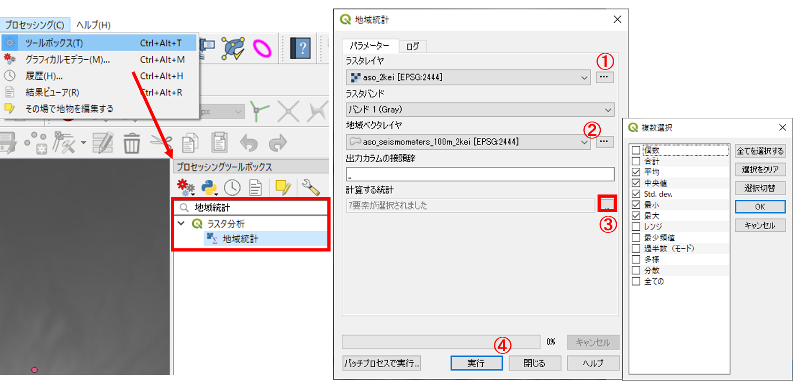
- ラスタレイヤに標高値のラスタデータを指定する。
- 地域ベクタレイヤに地震計から100ｍの範囲を示すポリゴンのデータを指定する。
- 計算する統計を指定する。今回は、
平均・中央・Std.dev,・最小・最大を選択した。 実行をクリックする。
属性テーブルを開き、最大標高、最小標高等の計算結果を確認する。

フィルタリング（ふるい）
フィルタリングは、近傍のセルの値を考慮して、セルの値を変化させる処理のことを指します。以下では、QGISのふるい機能を用いてフィルタリングする手法について解説しています。
ラスタ＞解析＞ふるいを実行する。
入力ファイルと出力ファイルを指定し、実行をクリックする。

地物情報表示ツールから、値が変わっていることを確認する。
 ▲メニューへもどる
▲メニューへもどる
ラスタ演算
セルの大きさや領域が同一のラスタデータは、演算によるデータ処理が可能です。ソフトウェアによっては、厳密にセルが重ならなくても補間した値で計算できるものもあります。この処理は、特定の条件に当てはまる地域の抽出や、2時期の地形の変化量の算出（例えば、10年前に取得された標高データと最近取得したデータを引き算する等）際などに用いられます。以下では、標高データや傾斜データを用いて、条件指定したエリアを抽出する手法について解説します。
はじめに、標高値と傾斜角のラスタを読み込む。ラスタ＞ラスタ計算機から計算結果を出力するための新規ラスタを作成する。
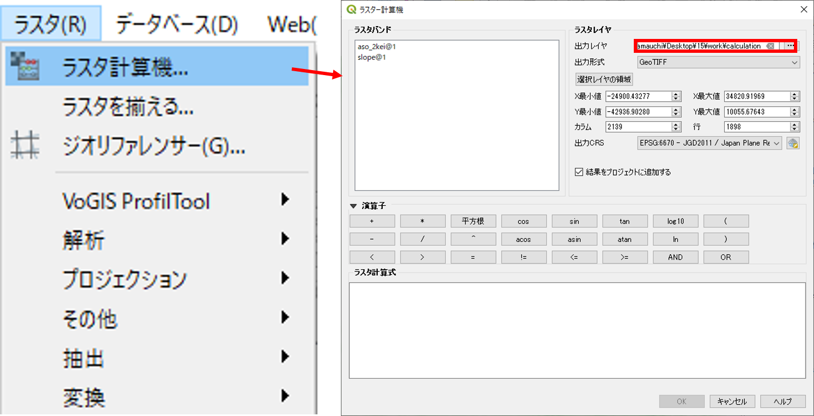
DEMから標高450ｍ以上の地域を抽出する。
ラスタ計算式に“aso_2kei@1” >= 450を入力後、OKをクリックすると右下の図のように表示される。

DEMから標高300m以上で傾斜が5度以下の地域を抽出する。
ラスタ計算式に“aso_2kei@1” >= 450 AND “slope@1” <= 5を入力後、OKをクリックすると右下の図のように表示される。
※"slope@"1は[斜面方位図の作成]で作成した傾斜ラスタである。
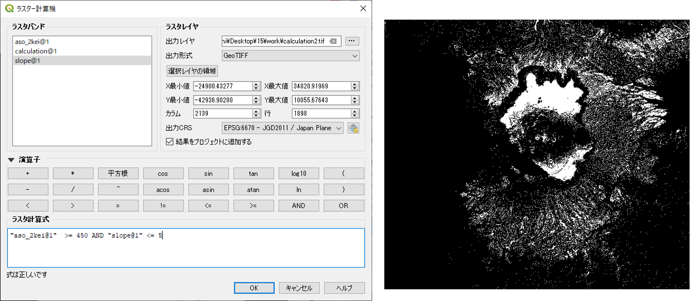
流域解析
GISでは、DEMデータを利用して、河川やその流域を求めることができます。以下では、GRASS GISの機能を利用して、流域を抽出する手法を解説します。GRASS GISの機能を利用する際に、アルゴリズム実行中にエラーとなる場合があるため、QGISを一度閉じ、QGIS Desktop 3.4.x with GRASS GIS 7.x.xを起動してください。
プロセッシング＞ツールボックスからr.watershedを選択する。

Elevationに標高ラスタを指定し、流域とするセル数を10000とし、累積流量、流れの方向、河川、流域を抽出する。
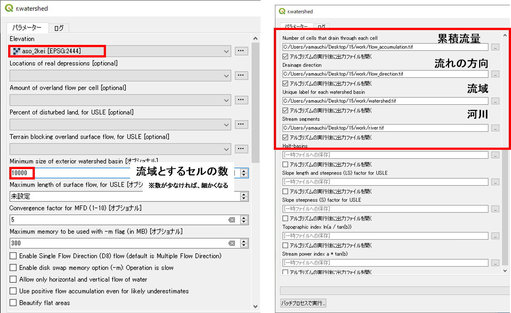
各項目ごとに下のような図ができる。 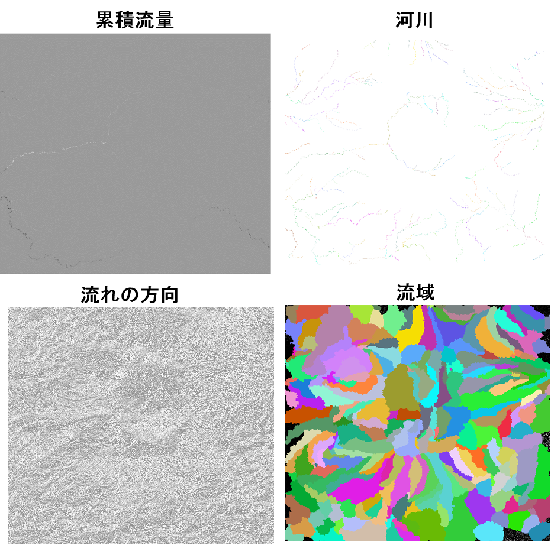
以下から、流域と河川のラスタをベクトルに変換していく。河川は、ラインに出力できるように河川のラスタを単純化する。プロセッシング＞ツールボックスをクリックする。次にr.thinを検索しr.thinを選択する。河川のラスターを設定し実行をクリックする。

ラスタをベクトル（ライン）に変換しプロセッシング＞ツールボックスをクリックする。次にr.to.vectを選択する。Thinnedのラスタを指定し、feture typeでlineを選択する。出力のファイル名を一時ファイルへの保存として実行する。

プロパティ＞シンボロジーを選択し、データのスタイルを調節する。
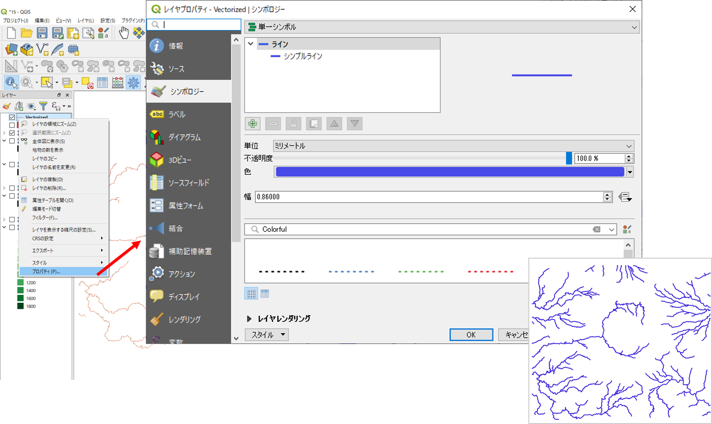
出力したデータを保存するため、河川のプロパティ＞エクスポート＞地物の保存を選択し、形式をESRI Shapefile、出力場所とファイル名、CRSを指定し、OKをクリックする。

同様の手法で、流域ラスタを指定し、Feature type をareaとし、流域のポリゴンを出力する。 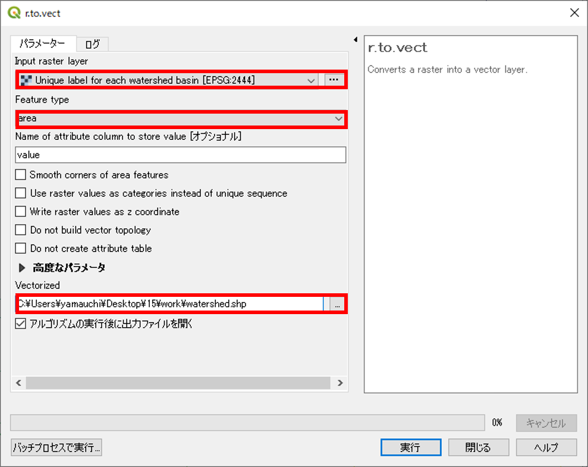
プロパティ＞シンボロジー＞分類されたからカラムをcatとし、分類をクリックする。データを保存するには、河川レイヤと同様にプロパティ＞エクスポート＞地物の保存を実行する。

コストパス解析
コストパス解析は、DEMデータを用いて、任意の地点間の経路を求める場合等に用いられます。以下では、傾斜をもとに移動コストを算出する手法を解説します。この実習の前に、QGISに標高ラスタと傾斜ラスタを読み込んでください。
Asoフォルダ内のaso_2kei.tif、slope.tif、start.shp、end.shpをQGISにインポートする。プロセッシング＞ツールボックスを開き、検索でr.walk.pointsを検索しr.walk.points選択する。
- 傾斜ラスタを指定する。
- フリクションコストを含むラスタに、傾斜角を指定する。
- 出発点としてstart.shpを指定する。
- 出力ラスタを指定する。
以下のように、Cumulative_costのラスタの配色を調整すると、解析結果を確認できる。
移動コストをもとに任意の2転換の最短経路を検索する
プラグインの管理とインストール＞Least-Cost pathをインストールする。
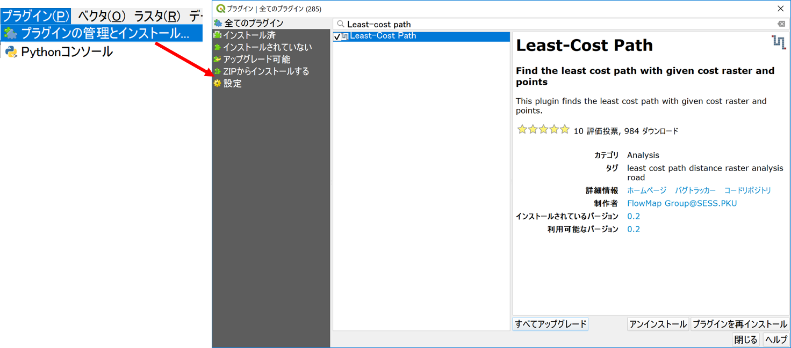
プロセッシング＞ツールボックスから、インストールしたLeast Cost Pathを起動する。

- cululative_costのラスタを指定する。
- Start-point layerにstart.shpを指定する。
- End-point(s) layerにend.shpを指定する。
- 出力レイヤを指定する。
- 実行をクリックする。
下の図のように、任意の2点間で傾斜に基づく最短経路が検索できる。

この教材の課題ページ_ラスタデータの分析へ進む
ライセンスに関する注意事項
本教材で利用しているキャプチャ画像の出典やクレジットについては、その他のライセンスについてよりご確認ください。
教材の利用に関するアンケート
本プロジェクトでは、教材の改良を目的とした任意アンケートを実施しています。ご協力いただける方は、アンケートにお進みください。ご協力のほどよろしくお願いいたします。※ 本アンケートの成果は、教材の改良のほか、学会での発表等の研究目的でも利用します。また、本アンケートでは、個人が特定できるような質問は設けておりません。